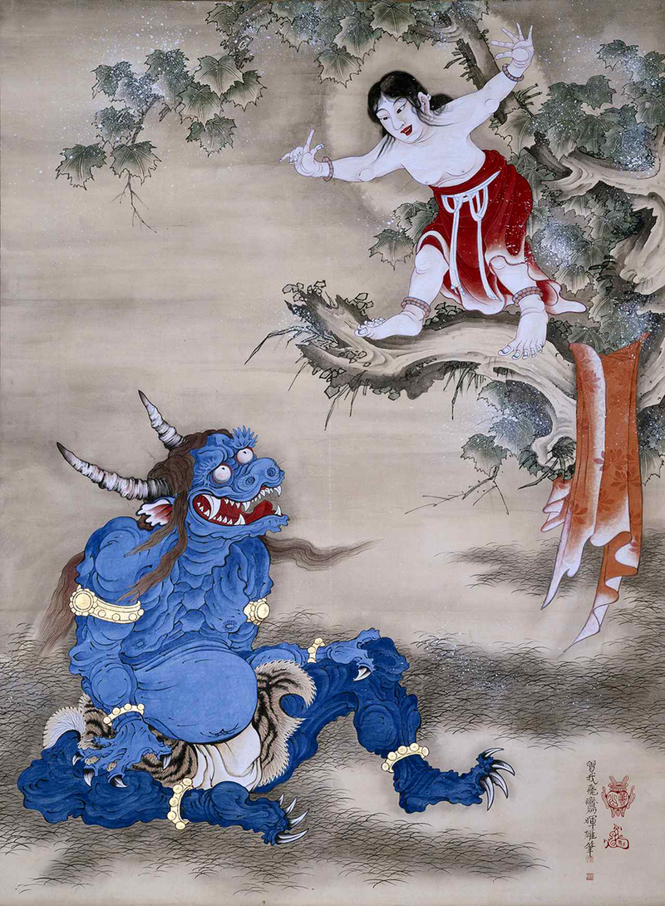
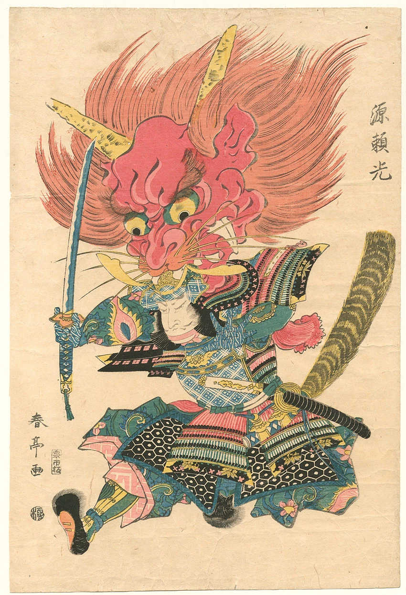

Oni (鬼?) are evil spirits from Japanese mythology and folklore. Oni are typically large in size, possess superhuman strength, and are terrifying in appearance, and are associated with disease, calamity and misfortune. Oni are found in countless Japanese stories and myths, where they tend to be depicted as roguish villains. Two famous oni are Shuten-dōji and Ōtakemaru.

An oni (鬼(おに)) (/oʊni/ OH-nee) is a kind of yōkai, demon, orc, ogre, or troll in Japanese folklore. They are believed to live in caves or deep in the mountains. Oni are known for their superhuman strength and have been associated with powers like thunder and lightning, along with their evil nature manifesting in their

Most Japanese folklore come from the Kojiki (古事記, "Records of Ancient Matters" or "An Account of Ancient Matters") and Nihongi (日本紀, "Japanese Chronicles"). These stories are the history and development of Japan in ancient times. At the beginning of time and space, Takamagahara (高天原, "Plane of High Heaven" or "High Plane of Heaven") came into being, along with the three divine beings Amenominakanushi (天之御中主, The Central Master or "Lord of the August Center of Heaven"), Takamimusubi (高御産巣日神, "High Creator"), and Kamimusubi (神産巣日, The Divine Creator). These three divine beings were known as Kami, and the three together are sometimes referred to as Kotoamatsukami (別天神, literally "distinguishing heavenly kami"). They manifested the entire universe. They were later joined by two more Kami, Umashiashikabihikoji (宇摩志阿斯訶備比古遅神, Energy) and Amenotokotachi (天之常立神, Heaven). Finally, two lesser Kami were made to establish earth, Izanagi (イザナギ/伊邪那岐/伊弉諾, meaning "He-who-invites" or the "Male-who-invites") and Izanami (イザナミ, meaning "She-who-invites" or the "Female-who-invites"). These two were brother and sister. They also are married and had many children, one of them being Kagutsuchi (カグツチ, Fire). Upon birth, Kagutsuchi mortally wounded Izanami, who went to Yomi (黄泉, 黄泉の国, World of Darkness) on her death and was transformed into a Kami of death. Izanami, who gave life in the physical world, continued to do so in the underworld, ultimately creating the very first oni. According to Chinese Taoism and esoteric Onmyōdō, the ways of yin and yang, the northeasterly direction is termed the kimon (鬼門, "demon gate") and considered an unlucky direction through which evil spirits passed. Based on the assignment of the twelve zodiac animals to the cardinal directions, the kimon was also known as the ushitora (丑寅), or "Ox Tiger" direction. One hypothesis is that the oni's bovine horns and tiger-skin loincloth developed as a visual depiction of this term. Temples are often built facing that direction, for example, Enryaku-ji was deliberately built on Mount Hiei which was in the kimon (northeasterly) direction from Kyoto in order to guard the capital, and similarly Kan'ei-ji was built towards that direction from Edo Castle. However, skeptics doubt this could have been the initial design of Enryaku-ji temple, since the temple was founded in 788, six years before Kyoto even existed as a capital, and if the ruling class were so feng shui-minded, the subsequent northeasterly move of the capital from Nagaoka-kyō to Kyoto would have certainly been taboo. Japanese buildings may sometimes have L-shaped indentations at the northeast to ward against oni. For example, the walls surrounding the Kyoto Imperial Palace have notched corners in that direction. The traditional bean-throwing custom to drive out oni is practiced during Setsubun festival in February. It involves people casting roasted soybeans indoors or out of their homes and shouting "Oni wa soto! Fuku wa uchi!" ("鬼は外！福は内！", "Oni go out! Blessings come in!"), preferably by a strong wrestler. This custom began with the aristocratic and samurai classes in the Muromachi period (1336–1573). According to the [[Ainōshō]] [ja], a dictionary compiled in the Muromachi period, the origin of this custom is a legend from the 10th century during the reign of Emperor Uda. According to the legend, a monk on Mount Kurama threw roasted beans into the eyes of oni to make them flinch and flee. Another theory is that the origin of this custom lies in the word 豆 (mame), which means bean. The explanation is that in Japanese, まめ, マメ (mame) can also be written as 魔目 (mame), meaning the devil's eye, or 魔滅 (mametsu), meaning to destroy the devil. During the Edo period (1603–1867), the custom spread to Shinto shrines, Buddhist temples and the general public. Regionally around Tottori Prefecture during this season, a charm made of holly leaves and dried sardine heads are used as a guard against oni.[37][38] There is also a well-known game in Japan called oni gokko (鬼ごっこ), which is the same as the game of tag that children in the Western world play. The player who is "it" is instead called the "oni". Oni are featured in Japanese children's stories such as Momotarō (Peach Boy), Issun-bōshi, and Kobutori Jīsan.